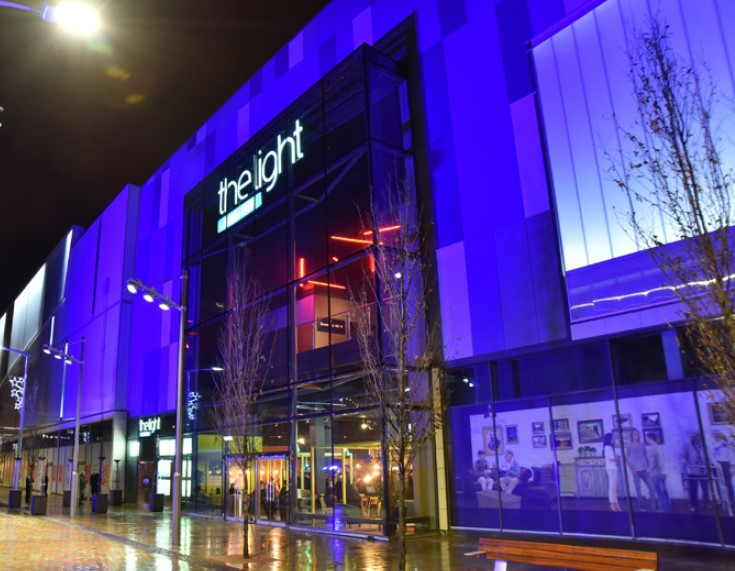

The light cinema
The Light Cinemas (stylised as the light) is a British independent cinema chain. The Light was founded in 2007 by ex-Cineworld director Keith Pullinger and John Sullivan, a former director at Warner Village Cinemas. The oldest cinema in the chain is currently New Brighton, which opened in December 2011. The cinema chain offers mainstream and independent films in a premium environment, with standard cinema ticket prices. All their Cinemas are fully licensed and include a café bar offer. The Light offers Infinity cards which allow subscribers to view films for a flat fee of £16.95 per month.
